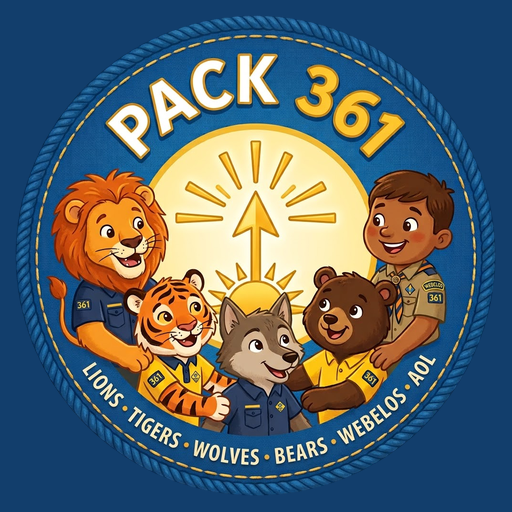

Part 1 is for every family: getting started, everyday use, privacy and help. Part 2 is for the pack’s leaders: running events and den meetings, advancement, money, expenses, reports and pack admin.
The Pack 361 app puts everything a pack family needs in one place: the calendar and RSVPs, campout details, paying the pack, your scout’s advancement, announcements from leaders, photos, paperwork, pack documents and more. It’s private: only families and leaders on the pack roster can sign in.
Everything a pack family does in the app, from putting it on your phone to RSVPs, campouts, paying the pack and keeping your scout’s forms handy. Leaders: start here too.
It takes about two minutes. There’s nothing to download from an app store: the app runs from your phone’s home screen like any other app.
Scan the “Get the pack app” QR code at a pack meeting, or open app.pack361.org/get on your phone, then:
Then open Pack 361 from the new icon on your home screen. The pack’s wolf walks along while it opens.
Go to Me → Phone alerts and tap to turn on phone alerts. You’ll get pack announcements, messages to your den, new polls, event reminders, news about your scout’s advancement, and reminders for jobs you volunteer for. On iPhone, alerts only work from the home-screen app.
New families (your first 90 days) see a Getting started list at the top of Home: Scouting America registration, medical forms, pack dues, phone alerts, adding the pack calendar, reading the welcome guide and meeting your den leader. The first four tick themselves once they’re done; tap the circle next to the other three yourself. Tap Hide this list to put it away. Home also shows anything else that needs you, like a permission slip or a quick poll.
Tabs that never move: along the bottom on a phone, down the left on a computer. Leaders get a fifth, Leaders. Me is your initials at the top right, and the magnifier next to it searches the whole app.
The pack’s next big event (a campout, a derby, Blue & Gold, crossover) is pinned at the top of Home and Calendar from about six weeks before. The Calendar has filter tiles at the top: Campouts, Big events, Den meetings. Leaders start on My dens (their own scouts’ dens); All shows every den.
The magnifier finds anything: an event, “dues”, “popcorn”, “medical forms”, a leader’s name. The bell has pack news, messages to your den and everything waiting on you; the red number shows what’s new.
Short pages for each thing: Family and registration (and photos), Payments, Medical forms, Saved on this phone, My notepad, Phone alerts, My contact info, and Report a problem or send a note. My notepad is a private notepad saved to your account (on any phone or computer you sign in on), plus every set of meeting notes you’ve taken. Only you can read it: not leaders, not admins. Appearance turns dark mode on, off, or to match your phone. Sign out is at the bottom.
Tiles for each section: Money (pay the pack, get paid back), Fundraisers (popcorn, apparel, uniforms), Tools (Nature ID, Geocaching, Gear closet, Polls, News and messages), Photos, Info (Pack guide, this guide, Documents) and People (Leader contacts, Invite a family, Help wanted).
Leaders only. Today: today’s meetings, each one tap from attendance and notes; what’s waiting on you; Add event, Announce, Message den, New poll. Then tiles for Dens (rosters, approvals, awards), Events, Money (key leaders) and People (training, medical forms), and a big Pack admin tile at the top for admins. While a meeting is on, a gold bar across the top opens it. An online meeting (a committee meeting on Google Meet, Zoom or Teams, set as the event’s link) has no attendance: its gold bar and its line under Today show Join the meeting and Take notes. At committee meetings and online meetings, everyone (families too) can tap Take notes on the meeting’s page: the notes are their own, saved to their account, and nobody else sees them.
Some events have room for only so many people (scouts, siblings and adults together). The RSVP card shows 3 spots left, or Full. Say Going when it’s full, or when your group doesn’t fit, and you join the waitlist: Full: you’re on the waitlist (#2). If a spot opens, you’re moved in automatically, in order, and get a You’re in! alert. Nothing to pay unless you get in.
The day before an event you said Going to, you get a reminder with the time and place (and, for a campout, what to bring). Two days before an event’s RSVP-by date, families who haven’t answered get a nudge. Den meetings don’t send either. No phone alerts? You get an email instead.
From a week before an event or campout, its page shows the National Weather Service forecast for the event’s address, day by day. Any watch or warning there shows at the top in red; tap What the Weather Service says for what to do. While the event is happening, a Right now line shows the latest temperature and conditions nearby.
Campouts and hikes also get a Trail guide (Pack → Nature ID has it anytime). Listen for birds names birds by their song, with a photo of each; it works without signal once set up (the first use downloads about 56 MB), and the sound never leaves your phone. Identify a plant names a plant from a close photo (needs signal). There’s a species-count challenge, and fall adds a scavenger hunt.
If an event needs one, its page shows the wording, and Home reminds you once you’ve said Going. Tick your scouts, type your full name, tick that you agree and tap Sign; the app keeps your name, the date and the wording. Prefer paper? Print the form and hand it to a leader.
Events and campouts list jobs (setup, cooking, check-in), and open spots show on Home. Sign up in one tap and you’ll get a reminder; You’re helping with on Home lists every job you and your family signed up for. Other families see only your first name and last initial. Bigger jobs for the year (popcorn, Blue & Gold) are on Pack → Help wanted: tap I can help, add a note if you like, and a key leader will reach out. Changed your mind? Take back my offer.
Plans changed? Cancel request until you pick it up. Past the bring-back day, the app sends a reminder every few days until it’s back.
Send receipts within 30 days. You can change or withdraw a request until the treasurer acts on it, and you’ll get an alert and an email when it’s paid or declined. Never put bank account numbers in the note.
The Documents page has forms, packing lists, minutes and other pack papers. Tap Open or Download.
Leaders post to the whole pack or to your scout’s den. Both show in the bell and on Home, and leaders can also send them by email. Polls ask quick questions (like which weekend works for a campout). Answer, then see the results.
Every adult gets one email on Sunday mornings: the next two weeks of events with your RSVP, anything waiting on you, announcements and open volunteer jobs. Your scout this week shows how far along the rank is, the adventure closest to done (with an idea to try at home), anything a leader approved or returned, and the next den meeting. Help wanted lists the pack’s open jobs.
Most families join because a friend asked. Invite a family (under Pack) has a ready-to-send message with a link to our public page: edit it, then share, text or email it (on Android, pick people from your contacts; their numbers never reach the pack). There’s also a QR code, a printable flyer, and the big events visiting families are welcome at.
Parent and leader names, emails and phone numbers; scout names, dens and member IDs; advancement from Scoutbook; attendance at den meetings, pack events and campouts; training dates; registration expiration dates; volunteer sign-ups; whether each medical form is on file and when it expires; what each family owes and has paid (amounts, dates, PayPal, Givebutter, check or cash); reimbursement requests and their receipts; RSVPs; poll answers; gear you borrow; Help wanted offers; Givebutter orders; pack photos and pack documents.
Birthdates, home addresses, medical forms or any medical information, card or bank details (PayPal and Givebutter handle payments) or passwords. Files you save on your phone stay on your phone; the pack never sees them.
Phone alerts are off until you turn them on. Email is only for sign-in codes, a one-time welcome, the Sunday email, reminders, updates on your own payments and reimbursements, den messages, and announcements a leader chooses to email. No passwords to steal, everything encrypted, and the database is backed up nightly.
Check spam, and make sure you used the email the pack has for you. Sign-in emails are limited to 20 an hour for the whole pack, so wait a few minutes and try again. On phones, email links open your web browser, not the home-screen app: go back to the Pack 361 icon and type the 6-digit code. Still stuck? Email info@pack361.org.
You signed in with an email the pack doesn’t have. Sign out and use the email you gave the pack. New to the pack? Fill in Ask to join the app on that page (your name, and your scouts’ names and grades). A pack admin checks it and adds you, and you get an email when you’re in.
Turn them on in Me → Phone alerts, and tap Send a test alert. On iPhone, alerts only work from the home-screen app, and you have to allow notifications when asked.
iPhone “HEIC” photos can’t be read by some browsers. Upload from the iPhone itself, or set the camera to Most Compatible (Settings → Camera → Formats). Big receipt photos are shrunk automatically; a PDF over 10 MB needs a smaller copy. Photos that fail stay in the list so you can try again.
Most payments show as paid right away; dues paid on Givebutter within a day. If you closed the page during a PayPal checkout, the app checks with PayPal again within a day. Paid by check or cash? Tap I paid another way so the treasurer knows to look for it.
Files in Saved on this phone live only in the browser or home-screen app where you saved them. On iPhone, the home-screen app and Safari keep separate copies, and deleting the app deletes its files. Keep a backup with Share → Save to Files.
Use Report a problem or send a note under Me (or search for “problem”). It goes straight to the pack admins. The Pack guide in the app has more answers. Or email info@pack361.org, which is also how to correct or remove your family’s information. When a family leaves the pack, their access is turned off.
Den leaders, key leaders, the Cubmaster and pack admins get these tools on top of everything in Part 1. Den leaders work with their own dens; key leaders, the Cubmaster and admins work with the whole pack.
Every account has one role, set by a pack admin. Scouts don’t have accounts. “Key leaders” look after the whole pack, like the chair and treasurer; together with den leaders they are the pack’s leadership. Leader tools are on the Leaders tab (1.2).
| Can… | Parent | Den leader | Key leader | Cubmaster / Admin |
|---|---|---|---|---|
| See the calendar, campouts, guide, photos, store | ✓ | ✓ | ✓ | ✓ |
| See own scouts’ advancement, report home requirements | ✓ | ✓ | ✓ | ✓ |
| Answer polls, sign up to volunteer, upload photos | ✓ | ✓ | ✓ | ✓ |
| RSVP, pay the pack, read pack documents | ✓ | ✓ | ✓ | ✓ |
| Ask to be paid back, invite a family, borrow gear, offer help | ✓ | ✓ | ✓ | ✓ |
| Add, build, copy and edit events; add documents | – | ✓ | ✓ | ✓ |
| Approve advancement | – | Own den | Whole pack | Whole pack |
| Plan den meetings, take attendance | – | Own den | Any den | Any den |
| Post pack announcements, start pack polls | – | ✓ | ✓ | ✓ |
| Ready to go?, message families about an event, weather alerts | – | ✓ | ✓ | ✓ |
| Message a den, poll a den | – | Own den | Any den | Any den |
| Take attendance, see the attendance report | – | ✓ | ✓ | ✓ |
| Review photos, track paperwork, add volunteer jobs, handle gear requests | – | ✓ | ✓ | ✓ |
| Edit the Pack guide, pick council events, Help wanted jobs | – | ✓ | ✓ | ✓ |
| Money: dues, fees, payments, registration | – | – | ✓ | ✓ |
| Expenses: approve and pay back requests, budget, reports | – | – | ✓ * | ✓ * |
| Pack admin (roster, roles, imports, welcome emails, settings) | – | – | – | ✓ |
* Never your own request: another key leader approves, pays, changes or deletes it. These rules are enforced inside the database, not just by hiding buttons, so they hold even if someone tries to get around the app.
Add event (Leaders tab), or Edit under Leaders on any event: date and time (or all day), place, details, which dens or ranks it’s for, a sign-up link, an optional cost (per scout, per adult or per family) and an RSVP-by date. Only some scouts (under Who it’s for) shows it only to the families of the scouts you tick. RSVPs are on for every event unless you turn them off. The event page shows who’s coming and the headcount, and a family that says Going to an event with a cost is billed for it automatically. For a campout, Camping nights fills itself in from the dates (Friday to Sunday is 2); type a number to change it. Tick Show on the public join page, with a line for visiting families, for events newcomers are welcome at (section 2.5).
On a new event, Repeats can be every week, every other week or monthly, Until a date; it adds one event per date. Editing one later? Tick Also change the other upcoming events in this series to change the name, time, place and details on all of them (each keeps its date). Copy this event (under Edit event in the Leaders only box) makes a new event on the date you pick with the same details, permission slip, schedule, packing list, info, links and volunteer jobs; RSVPs and the Signal group start fresh. Limit under RSVP caps scouts, siblings and adults together. Once it’s full, families who say Going join a waitlist and move in on their own, in order, when spots open; Who’s going lists the waitlist in order. Families on the waitlist aren’t billed until they’re in.
Tap Build schedule, packing list and info on a campout (or Add schedule, info and links on any event). Everything saves as you go, and families see it right away. Schedule: what’s happening, the day and time, where. Packing list: items in groups; Start from the standard list for a campout. Info sections: a title, text and bullet items, Plain, Good to know (gold) or Important (red); tick Tap-to-check list for a scavenger hunt families tick off on their phones. Links: sign-up forms, maps and the like. Start from a past campout or event copies any of those four parts from an earlier one, with the schedule moved to this event’s dates. See it as families do to check it.
On any event that takes RSVPs, the Leaders only box shows what the families going still need: Medical forms, Permission slips, Not paid yet and open Volunteer jobs, each naming the families. For an overnight it also checks that an adult going has current BALOO and Hazardous Weather training. Open a row, edit the message if you like, and tap Remind these families (or Ask families going to help): a phone alert, and an email if you tick it, to just those families, at most every 12 hours.
Message families on the event page lets you pick Going, Going and maybe (Going, maybe and waitlist when there is one) or No answer yet, for a rain-out or a last call for RSVPs. It goes as a phone alert, with an optional email (replies come to you). For a Signal group: in Signal, open the event’s group, tap its name, then Group link; copy it, and turn on Approve new members. Paste it in the Signal group card on the event page: only leaders and families going see Join the Signal group, and messages to families going end “More in the Signal group.”
Each evening the app checks the Weather Service for events in the next three days that have an address. For a watch, warning or major advisory during the event, leaders get a phone alert (den leaders for pack-wide events and their own dens’; key leaders, the Cubmaster and admins for all). It opens the event, where you can message the families going. Families see the forecast and any warning on the event page.
On the event form, tick Families sign a permission slip for each scout. Edit the wording parents agree to, and add a due date or a printable form from Pack documents if you like. Families who say Going are reminded until they sign. The event page shows leaders who has a slip (families going first), the phone number to reach each parent that day, and Paper slip in for paper ones. Check it before you leave for the event.
Under the event’s details, leaders get a Leaders only box of buttons families never see: Take attendance (from the day of; den leaders see their den, with Going families ticked), Who’s going, Ready to go?, Sign-ups and payments (Givebutter), Permission slips, Signal group, Leader notes, Message families and Edit event (edit, copy, archive). Leaders → Events → Attendance shows every scout’s den meetings, pack events and camping nights for the season (July to June), with a spreadsheet download.
Tap the meeting under Leaders → Today, the gold bar while it’s on, or Record the meeting on the calendar event. Then: 1. tap the scouts who are there (families who RSVP’d “Going” are already checked), 2. tap the adventure you worked on (the ones most scouts still need are on top) and its requirements, 3. tap Save. That records attendance and the requirements for everyone there, ready for the advancement chair to enter in Scoutbook. Families of scouts who were there get a recap alert; families who missed it get how to finish at home. Leader notes at the bottom are for the den’s leaders only.
Leaders → Dens: approve or return requirements families report (they get an alert either way), see each den’s progress grid and what to plan next. Awards to hand out is a Scout Shop shopping list: every loop, pin and rank patch earned and not yet awarded, by rank like the store’s shelves, with a photo, the SKU number, how many and for whom. It also prints bag labels (Avery 5160, 5163 or 5164) and an awards-night sheet. Enter in Scoutbook lists approved items by scout or by requirement; the second view matches Scoutbook Plus’s screen for marking one requirement for several scouts at once. On a computer it’s laid out like Scoutbook, one block per adventure, with Entered for a scout or the whole adventure once it’s in.
Post to the whole pack, with a phone alert and, when it matters, Also email every family. Or message one den’s parents (alert, optional email; replies come to you): den leaders their own dens, key leaders any den. Never to scouts. Polls go to the pack or a den, with one or several answers, one answer per family, a closing date, and results for everyone or leaders only.
Leaders → People → Medical forms: every scout and adult’s form status by den. A leader checks off each paper copy. Before a campout, filter for missing and message those families. Who keeps the forms: give a leader the position Medical forms (Pack admin → Roster → Position). They alone get the “I turned it in” alerts and to-do, and their name shows at the top for paper forms.
Leaders → Reports, each with a spreadsheet. Every leader: Training (courses, expiry, what each position still needs), Medical forms, Attendance. Roster (with who left in the last two years): Cubmaster and admins. Membership and dues: key leaders. Pack admin → Report access adds others.
Approve or remove family uploads and handle removal requests; it lists the scouts whose families opted out. A leader’s own uploads skip review only after they confirm none of those scouts are in them. Facebook photos (Photos page): mark who’s in a photo; it’s OK to post once every face has a yes.
Documents → Add a document (PDF, Word, Excel, PowerPoint, images; up to 10 MB) for everyone, leaders only, or one den. Never upload medical forms or anything with personal details.
Leaders → People → Training shows what each leader needs for their position and what’s missing, plus a pack checklist (BALOO before any overnight, Hazardous Weather, water safety). Safeguarding Youth is renewed every year. Me → My training lists what’s expiring and the modules for your position, with reminders 60, 30 and 7 days ahead.
Leaders → Events → Gear requests (the quartermaster: Manage the gear closet) lists requests and what’s out: Approve, Decline, Mark picked up, Mark returned or More time. The Inventory shows each item, where it’s kept, how many are free and who has the rest. Whoever’s position says Quartermaster runs it, even as a parent, and gets each new request.
Me → See the app as… shows the app as a parent, den leader or key leader sees it (for 8 hours). Add volunteer jobs to any event or campout. Take an event off the calendar, or put it back, from its page.
Leaders → Money shows what every family owes and has paid this season: still owed, families who say they paid, paid, and online versus check and cash. Its tabs are Charges, Pack dues, Registration, Add a fee and Settings, with buttons for Expenses and Reports at the top.
Families pay dues on Givebutter as before. Each morning (or when you tap Sync now in Settings) the app matches each payment to the family by email and to the scouts by the names they typed, then marks those scouts’ dues paid. Anything it can’t place waits on the Pack dues tab: tap Match to…, pick the family and tick its scouts, or Not dues for a donation. Refunds happen in Givebutter; reopen the charge in the app and it stays open.
Event costs are billed automatically from RSVPs (paid charges never change; the list flags when an RSVP no longer matches what was paid). For anything else, Add a fee: a name, amount and due date for every family or scout, one den’s families or scouts, leaders, one family or one person (anyone who already has that fee this season is skipped). Search and filter the Charges tab by kind, status, family or season, and Download CSV for the treasurer’s records.
Money → Expenses tracks what the pack spends and who needs paying back. Money → Reports turns it into the pack’s financial picture. A number on the Money button shows requests waiting.
Each request shows who asked, what they bought, the amount, the date, how they’d like to be paid, their note and the Receipt. Requests sent more than 30 days after the purchase are flagged. For each one, pick the budget category, then:
You can’t approve or pay back your own request; another key leader does. Any key leader whose roster position includes “Treasurer” gets an alert and an email for each new request (with no treasurer, the Cubmaster and admins do).
Expenses → Budget: pick the season and enter an amount for each money-in and money-out line (leave a line blank if it isn’t budgeted); it shows the planned difference. Next season is in the list, so the new budget can go in during the spring. Rename categories to match the pack’s budget, add new ones, or Hide ones you don’t use (old reports keep them).
Money → Reports for a season (July to June) or any dates (a month, a quarter, one campout weekend):
Givebutter and PayPal amounts are what families paid, before those services’ fees; record the fees as an expense under “Bank and payment fees” to count them. Requests waiting for review and declined ones aren’t counted.
Pack → Help wanted is the board of grown-up jobs for the year. Under For leaders: Add a job (what it involves, and who questions go to; families see only the name), see who offered to help and their notes, Close this job (and say who’s doing it), Open it again, or Edit or delete. An offer sends a phone alert to the job’s contact, or to key leaders when there isn’t one. Volunteer jobs this season counts each family’s event job sign-ups since July 1 and lists who hasn’t had a turn; only leaders see it.
Leaders edit and publish Pack guide pages from the app. Draft pages are visible to leaders only, with the parts still to fill in highlighted.
Events → Council events lists Baltimore Area Council and district events. Meetings, holidays and other districts are hidden by default, and Cub Scout events are marked. Tap Add to our calendar or Skip; den leaders can look but not add.
The public page (app.pack361.org/join, and pack361.org once it points to the app) tells families about the pack and how to join. Events ticked Show on the public join page appear there under Big events coming up, with only the name, dates, place name and your line for visitors (never the address or details). Families share the page from Invite a family.
Key leaders can add documents for key leaders only (budgets, minutes in draft), and edit, archive or delete any document.
| When | In the app |
|---|---|
| July–August | Money → Settings for the new season; Set up dues; registration dates; enter the budget; check Leaders → People → Training for everyone’s renewals; post the year’s jobs on Help wanted. |
| Before each campout | Event with cost, RSVP-by date and any limit; Build this event (or start from a past campout); volunteer jobs; the Ready to go? card for forms, slips, payments and BALOO. Afterward, take attendance so camping nights count. |
| Before big events | Tick “Show on the public join page” on the ones visitors are welcome at, and remind families to use Invite a family. |
| Every week or two | Confirm check and cash payments; match any pack dues waiting; review and pay back reimbursement requests. |
| Each committee meeting | Money → Reports for the season so far, printed or saved as PDF; what’s still outstanding. |
| Fall | Registration renewals (the app reminds families 30, 7 and 0 days before). |
| Spring | Next season’s budget in Expenses → Budget; Blue & Gold and crossover events. |
| June | Season report (July–June) for the year-end committee meeting and the treasurer’s records. |
Pack admins and the Cubmaster see Leaders → Pack admin. Nobody needs to touch the database for everyday roster changes. It also shows how much of the free plan’s 1 GB of file storage photos, documents and receipts use.
| Tool | What it does |
|---|---|
| Join requests | People who signed in with an email that isn’t on the roster and asked to be added. Check they’re a pack family, pick a new or existing family and each scout’s den (suggested from their grade), and tap Add to the roster; they get an email and can sign in right away. Or decline with a note they’ll see. Scouts’ names are deleted from the request once it’s answered. Admins get a phone alert and an email for each request. |
| Roster check | The roster doesn’t update itself from Scoutbook. After new families register, at the start of each school year (when scouts move up) and when someone leaves, export the youth roster from Scoutbook Plus (CSV or Excel) and choose it here, on a computer. The app lists who’s new in Scoutbook (add each one to a family with one click), who’s in a different den (Move all), member IDs to save, scouts registered again, and scouts not in the export (turn them off after checking with the den leader). The file is read on your computer and never uploaded. |
| Families and scouts | Add and edit families, adults and scouts; move scouts between dens; turn off access when a family leaves (their data stays, they just can’t sign in). Changing someone’s email? Do it before they sign in: it’s the only way into their account. |
| Roles and positions | Set each adult’s app role (parent, den leader, key leader, Cubmaster or admin) and position title. Put “Treasurer” in the treasurer’s position so reimbursement requests reach them, and “Quartermaster” in the quartermaster’s so gear requests do. |
| Dens and den leaders | Add dens and assign their leaders. Dens show by rank (Lion, Tiger…); the Scoutbook den number stays on this page. |
| Welcome emails | Send each adult a one-time “the app is ready” email, in batches of up to 40 a day to stay within the free email plan. It shows who has signed in and how many have phone alerts on (alerts on by each name). New families who could use a hand lists families from the last 90 days with two or more Getting started steps still to do; a call or a word at the next meeting helps. The page also links a printable “Get the pack app” QR sign (app.pack361.org/get/qr). |
| Messages | Problems and notes families send with “Report a problem or send a note”. Admins also get a phone alert and an email for each one. |
| TroopWebHost calendar | Only while the pack still uses TroopWebHost: syncs every afternoon, or tap Sync now. Events removed there move to the archive; nothing is deleted. Editing a synced event in the app takes it out of the sync. |
| Import training | Monthly (key leaders can too; the Committee Chair gets a reminder). Upload the my.scouting training report (CSV or Excel). Leaders are matched by member ID and name, and only newer dates are applied. The file is read on your computer and never stored. |
| Import Scoutbook | Upload the Scoutbook Plus advancement export (Reports → Quick Export → Advancements), ideally weekly. The app never signs in to Scoutbook itself. |
| Pack store | Sync Givebutter orders and choose which campaigns the store shows. |
| Weekly newsletter | Who gets the Sunday email: off, testing (only the leaders ticked) or every family. See this week’s shows it as your family would get it; Email it to me sends you a copy. Switch to every family when TroopWebHost is cancelled. |
| Report access | Who else can open the Roster and Membership and dues reports (leaders only), and who helps with Facebook photos (anyone). |
| Security log | Who added or removed people, changed a role, position, email or den leader, gave report access, or downloaded a spreadsheet. Can’t be edited; kept two years. |
| Pack settings | Awards tracking start date, how long photos are kept (24 months), welcome emails per day, and the pack’s public page (the link Invite a family shares; change it to https://pack361.org when that address points to the app). Dues and fee amounts are on Pack → Money → Settings. |
| Beta site | New features go to beta.pack361.org first. It shows the pack’s real information, but only the testers you tick here (and admins) can sign in, and its emails and alerts reach testers only. When a version is ready it’s released to everyone; the version number is at the bottom of Me. |
| Nightly jobs | Reminders, weather checks, gear reminders, photo clean-up and calendar syncs run every evening. The Friday morning before a pack meeting, anyone whose position says Advancement gets a reminder to enter waiting items in Scoutbook. If a step fails, Pack admin shows which one and why. |
The app holds families’ contact details and scouts’ records, so it’s built in layers, and leaders keep it that way. It was last security-reviewed in October 2026 (version 1.4); the review is repeated every year.
Leaders can see every family’s details and every scout, so every leader signs in with two things: the code emailed to them, and a code from an authenticator app on their phone. Someone who got into your email still couldn’t get in as you. Until you’ve set it up, you get a parent’s access. Parents sign in with just the email code.
Until you set it up, the app shows that page every time you open it, and you only have a parent’s access (in the app and in the database).
Each time the app gains a feature people will notice, this guide gets a new version. The latest copy is always at app.pack361.org/app-guide (Pack → How to use this app).
| Version | Date | What’s new |
|---|---|---|
| 3.6–3.23 | Oct 5–9, 2026 | Leaders tab with today’s meetings, a meeting bar and Leader notes; Pack in sections; Me at the top right (1.2); Navigate; Reports; events for only some scouts; Facebook photos with each family’s yes; a Leaders only box on events; RSVPs count siblings and fill in from payments; den leaders take attendance for their den; a gear inventory; a scavenger hunt; online meetings; My notepad (1.2); a Medical forms keeper (2.2); You’re helping with on Home (1.3); a Security log (2.6); Scoutbook comes in by file upload only. |
| 3.1–3.5 | Oct 4–5, 2026 | Carpool; Trail guide and Nature ID: bird song and plant ID in the app; Right now weather; event pages in tabs (1.3); loading screen. |
| 3.0.2 | October 3, 2026 | Two-step sign-in for den leaders (2.8); Key leaders role, with den leaders running the guide, Help wanted and council events; RSVP buttons show your answer (1.3). |
| 3.0 | October 3, 2026 | Photos are OK unless a family opts out (1.3, 1.4, 2.2). Families: Getting started list (1.1), Add to my calendar, weather, RSVP limits and waitlists, reminders, advancement alerts, the Sunday email’s Your scout this week, Gear closet, Help wanted, Season keepsake (1.3). Leaders: Build this event, copy and repeating events, Ready to go?, messages to who hasn’t answered, weather alerts, gear requests (2.2); Help wanted jobs (2.5); new families on Welcome emails (2.6). |
| 2.3–2.5 | October 3, 2026 | Signal group on events and Message families going; Leader mode by default for leaders; photo swipe and zoom; faster loading, a tap-to-check scavenger hunt and one-click sign-in on computers (1.1–1.3, 2.2). |
| 2.0–2.2 | October 2, 2026 | Redesign: fixed tabs, search, Calendar filters (1.2); dark mode; advancement and training imports. |
| 1.5 | October 2, 2026 | Two-step sign-in for leadership and admins (2.8). Popcorn page (1.3). Monthly training import (2.2, 2.6). |
| 1.4 | October 2, 2026 | Security review: safer email links, limits on messages and uploads, Get a new link for the calendar feed (1.3). New section 2.7. |
| 1.3 | October 1, 2026 | Get the pack app: a QR code and a page (app.pack361.org/get) for adding the app to a phone (1.1, 2.6). A beta site for testers (2.6). |
| 1.1–1.2 | October 1, 2026 | Permission slips, Ask to join the app, Roster check, See the app as…, position training, Awards to hand out (1.3, 1.5, 2.2, 2.6). |
| 1.0 | September 2026 | First edition: Part 1 for every family, Part 2 for leaders. |